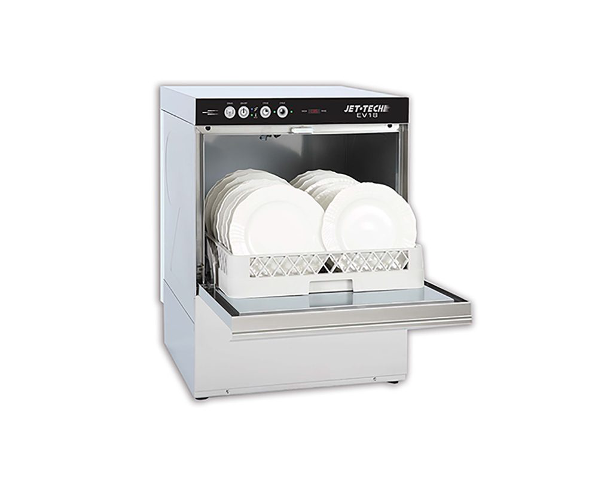
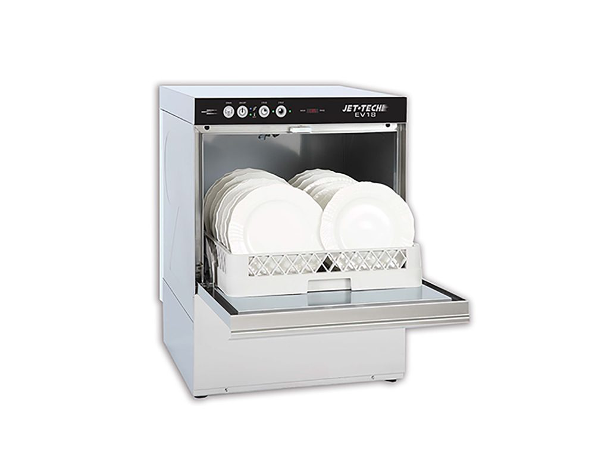

When your home appliances break down, it can disrupt your daily life. **Appliance repair in Vancouver** is essential to quickly get your appliances back in working order and ensure comfort in your home. We offer professional service for all types of household appliances, from washing machines and refrigerators to kitchen blenders and dishwashers. Regardless of the brand of your appliance, our specialists are ready to help with any type of repair. We also provide services in nearby areas, including Surrey, Coquitlam, and Burnaby.
 



Our technicians perform appliance repair for well-known brands such as Whirlpool, Maytag, KitchenAid, JennAir, LG, Samsung, GE Appliances, Frigidaire, Bosch, Electrolux, Panasonic, Kenmore, Dacor, Speed Queen, Thermador, Sub-Zero, and Viking Range. Appliance repair in Vancouver, as well as in Surrey Coquitlam and Burnaby, requires a special approach, as each model has its own unique features. We carry out diagnostics and restore any malfunctions, whether it's an issue with electronics, mechanics, or the control system.
Additionally, regular preventive maintenance helps to prevent major breakdowns. Our specialists can diagnose, check important parts, and replace worn-out components. This helps avoid serious issues and extends the service life of your appliance, whether it's a **Whirlpool, LG, Samsung**, or **Bosch**. **Appliance repair in Vancouver** with preventive maintenance is the best way to keep your appliances in perfect working condition.
In Vancouver and surrounding areas, we also service older and historical appliance brands, such as **Admiral, Amana, Caloric, Crosley, Estate, Gibson, Hardwick, Hotpoint, Inglis, Kelvinator, Magic Chef, Norge, Roper, Tappan, Westinghouse, White-Westinghouse, Youngstown, Chambers, Montgomery Ward, and Sears**. Repairing old appliances requires high-level expertise, as many parts may be difficult to find. Our team has experience working with such models and always finds a solution to restore their functionality. **Appliance repair in Vancouver**, as well as in **Surrey**, **Coquitlam**, and **Burnaby**, is our specialty, and we guarantee that your appliance will work like new.
When repairing old models, such as **Hotpoint, Westinghouse, or Kelvinator**, we take into account not only the type of breakdown but also the aging of materials and construction. We work with original or equivalent parts to ensure the longevity of your device after repair. **Appliance repair in Vancouver** and surrounding areas is our strength.
Additionally, we provide repair services for European appliances. In Vancouver and surrounding areas, many customers prefer **Siemens, Miele, AEG, Zanussi, Smeg, Gaggenau, Beko, Indesit, Candy, DeLonghi, Fagor, and Whirlpool Europe**. These brands are known for their high quality and complex electronics, so repairing such models requires special attention and a professional approach. We use only original parts and reliable materials for European appliance repair, ensuring their long-term performance after restoration.
If your appliance requires part replacement, we provide quality service and find the necessary components to restore the function of your **Miele or Siemens**. **Appliance repair in Vancouver**, as well as in **Surrey, Coquitlam, and Burnaby**, with European brands, will ensure maximum reliability and comfort.
We offer repair services not only for major appliances such as refrigerators and washing machines but also for small household devices. We restore the operation of microwaves, coffee makers, food processors, as well as perform dishwasher and oven repairs. **Appliance repair in Vancouver**, as well as in **Surrey, Coquitlam**, and **Burnaby**, covers all types of appliances, and our specialists can fix malfunctions of any complexity, from minor issues to more serious breakdowns.
Our customers choose us for our professionalism, efficiency, and fair prices. We offer high-quality services for the repair of appliances from all well-known brands, including **Whirlpool, Maytag, KitchenAid, JennAir, LG, Samsung, GE Appliances, Frigidaire, Bosch, Electrolux, Panasonic, Kenmore, Dacor, Speed Queen, Thermador, Sub-Zero, Viking Range, Admiral, Amana, Caloric, Crosley, Estate, Gibson, Hardwick, Hotpoint, Inglis, Kelvinator, Magic Chef, Norge, Roper, Tappan, Westinghouse, White-Westinghouse, Youngstown, Chambers, Montgomery Ward, Sears, Siemens, Miele, AEG, Zanussi, Smeg, Gaggenau, Beko, Indesit, Candy, DeLonghi, Fagor, Whirlpool Europe.
Trust your household appliances to the professionals. We work with appliances from all brands and provide quality service and fast diagnostics. Contact us for **appliance repair in Vancouver**, as well as in **Surrey, Coquitlam**, and **Burnaby**, and we will restore your appliance to perfect working condition. We service brands such as **Whirlpool, Maytag, KitchenAid, JennAir, LG, Samsung, GE Appliances, Frigidaire, Bosch, Electrolux, Panasonic, Kenmore, Dacor, Speed Queen, Thermador, Sub-Zero, Viking Range, Admiral, Amana, Caloric, Crosley, Estate, Gibson, Hardwick, Hotpoint, Inglis, Kelvinator, Magic Chef, Norge, Roper, Tappan, Westinghouse, White-Westinghouse, Youngstown, Chambers, Montgomery Ward, Sears, Siemens, Miele, AEG, Zanussi, Smeg, Gaggenau, Beko, Indesit, Candy, DeLonghi, Fagor, Whirlpool Europe.
Review (2023.10.12)
Jessica Miller from Vancouver

We called this fast-fix company to repair
our Maytage dishwasher,
the dishwasher stopped running with water,
the guys came,
turned it around and finally fixed it,
our family saved $500,
we didn t buy a new one, we will contact them in the future.Thank you.

Review (2023.12.01)
Scarlett from Burnaby

One fine day our Samsung dryer broke down, it wouldn t turn on,
we are dependent on it, we save money, we have a large family,
I decided to order the dryer repaired, thanks guys, everything works.
Review (2023.08.11)
Maddison from Coquitlam

5 years have passed since we bought our huge Zabzerro refrigerator,
water started leaking onto the floor from the freezer, ice was collecting,
I couldn t wait long, the guys came and fixed it, thank you, I m so glad.
Review (2024.06.01)
Harry from West Vancouver

Thank you guys, they fixed my grill in a restaurant,
it was the switches that didn t work, then they broke, without it I wouldn t have been able to work,
3 months have passed and everything is working after the repair.
Review (2024.02.01)
James from North Vancouver

The LG washing machine broke down, it just stopped running with water,
I couldn t open the door, I called the guys, they fixed everything,
replaced the spare parts, everything works great, Thanks to Oscar.
Review (2024.03.11)
Jack from Surrey

The Maytag dryer doesn t heat up, it doesn t dry the clothes,
the guys fixed it in a couple of hours, now it s like new,
I know how to save money. Thank you for having such hands and a head.
Review (2024.04.21)
Archie from Vancouver

Maytag refrigerator is not cooling,
the light was on but there was no cold, the refrigerator is good,
I decided to make repairs, the guys fixed everything,
it works 5 stars in Google.Thank you


Website created Fast-fix in 2010-2026